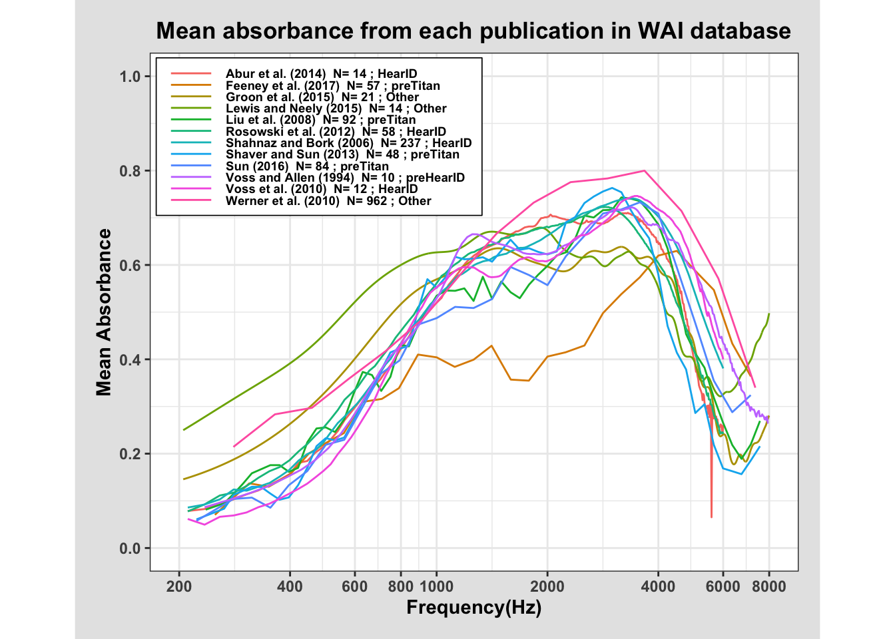

library(tidyverse)
library(RMariaDB)
con_wai <- dbConnect(
MariaDB(), host = "scidb.smith.edu",
user = "waiuser", password = "smith_waiDB",
dbname = "wai"
)
Measurements <- tbl(con_wai, "Measurements")
PI_Info <- tbl(con_wai, "PI_Info")
Subjects <- tbl(con_wai, "Subjects")SQL Plotting
Plotting Ear Measurements from WAI Database
My goal for this analysis is to explore large amounts of wideband acoustic immitance auditory data using SQL. To accomplish this, I will query the WAI Database and build a dataset that can be used to recreate the Mean Absorbance vs. Frequency figure from Voss’s 2020 article on wideband acoustic immitance. I will use three tables from the database: Measurements - a table containing WAI measurements for each subject and session from several different studies, PI_Info - a table holding logistic details about each study, and Subjects - a table with demographic and other information about each subject across all studies. Using SQL, I will join parts of these tables to compile information from 12 different studies, and plot the mean absorption vs frequency results for each, as in Figure 1 (Voss 2020). Then, I will inspect the 2023 WAI study by Sun et al., and use a similar process to plot and determine discrepancies in mean absorbance by age.
-- Join SQL tables into one data frame with info needed for plot
SELECT Measurements.Identifier,
AVG(Absorbance) AS Mean_Absorbance,
Frequency,
CONCAT(AuthorsShortList, " (", Year, ") ", " N= ",
COUNT(DISTINCT SubjectNumber, Ear),
" ; ", Instrument) AS Label
FROM Measurements
JOIN PI_Info ON Measurements.Identifier = PI_Info.Identifier
WHERE (Measurements.Identifier = "Abur_2014" OR
Measurements.Identifier = "Feeney_2017" OR
Measurements.Identifier = "Groon_2015" OR
Measurements.Identifier = "Lewis_2015" OR
Measurements.Identifier = "Liu_2008" OR
Measurements.Identifier = "Rosowski_2012" OR
Measurements.Identifier = "Shahnaz_2006" OR
Measurements.Identifier = "Shaver_2013" OR
Measurements.Identifier = "Sun_2016" OR
Measurements.Identifier = "Voss_1994" OR
Measurements.Identifier = "Voss_2010" OR
Measurements.Identifier = "Werner_2010") AND
Measurements.Frequency > 200 AND Measurements.Frequency < 8000
GROUP BY Measurements.Identifier, Frequency, Instrument;head(ears) Identifier Mean_Absorbance Frequency Label
1 Abur_2014 0.07847459 210.938 Abur et al. (2014) N= 14 ; HearID
2 Abur_2014 0.08264199 234.375 Abur et al. (2014) N= 14 ; HearID
3 Abur_2014 0.09484823 257.812 Abur et al. (2014) N= 14 ; HearID
4 Abur_2014 0.10314722 281.250 Abur et al. (2014) N= 14 ; HearID
5 Abur_2014 0.11375764 304.688 Abur et al. (2014) N= 14 ; HearID
6 Abur_2014 0.12212053 328.125 Abur et al. (2014) N= 14 ; HearIDThis table displays the mean measured absorbance for ears at each frequency, separated by study, using information from the Measurements and PI_Info tables. It also contains information to go in the legend of the plot, including the instrument used, number of ears, year, and authors for each study.
Plotting The Data
library(scales)
ears |>
ggplot(aes(x = Frequency, y = Mean_Absorbance, color = Label)) +
geom_line() +
xlim(200, 8000) +
ylim(0, 1) +
labs(
title = "Mean absorbance from each publication in WAI database",
x = "Frequency(Hz)",
y = "Mean Absorbance",
color = NULL
) +
# proper x and y scales
scale_x_log10(
limits = c(200, 8000),
breaks = c(200, 400, 600, 800, 1000, 2000, 4000, 6000, 8000)
) +
scale_y_continuous(
limits = c(0, 1),
breaks = seq(0, 1, 0.2)
) +
theme_bw() +
theme(
plot.background = element_rect(
fill = "grey90",
color = "grey90",
size = 30),
legend.position = c(0.01, 0.99),
legend.justification = c(0, 1),
legend.background = element_rect(
color = "black",
size = 0.3,
fill = "white"
),
legend.text = element_text(size = 7),
legend.key.height = unit(0.15, "mm"),
legend.key = element_rect(size = 0.1),
legend.key.size = unit(1, "cm"),
aspect.ratio = 0.8,
text = element_text(face = "bold"),
plot.title = element_text(hjust = 0.5),
plot.margin = margin(12, 12, 12, 12)
)
The above graph displays the mean percent absorbance per frequency (in hertz), from each study’s findings, separated by color. Each line appears to follow a similar trend, with low absorbances at low frequencies, increasing to a maximum absorbancy between 2000 and 4000 hz, before dropping back down to low absorbance levels at higher frequencies. Notably, in my plot the Feeney et al. study has much lower absorbances between 1000 and 3000 hz frequencies than all of the other observed studies. This contrast does not appear in Voss’ version of the plot.
Part 2: Examining Sun’s 2023 Study for Absorption Differences by Age
SELECT *
FROM Subjects
WHERE Identifier = "Sun_2023"
LIMIT 3500, 10;| Identifier | SubjectNumber | SessionTotal | AgeFirstMeasurement | AgeCategoryFirstMeasurement | Sex | Race | Ethnicity | LeftEarStatusFirstMeasurement | RightEarStatusFirstMeasurement | SubjectNotes |
|---|---|---|---|---|---|---|---|---|---|---|
| Sun_2023 | 124137 | 1 | 12 | Child | Female | Other | NonHispanic | Normal | Normal | NA |
| Sun_2023 | 124139 | 1 | 16 | Child | Female | Caucasian | NonHispanic | Normal | Normal | NA |
| Sun_2023 | 124140 | 1 | 17 | Child | Female | Caucasian | NonHispanic | Normal | Normal | NA |
| Sun_2023 | 124141 | 1 | 17 | Child | Male | Black | NonHispanic | Normal | Normal | NA |
| Sun_2023 | 124150 | 1 | 14 | Child | Female | Black | NonHispanic | Normal | Normal | NA |
| Sun_2023 | 124154 | 1 | 16 | Child | Male | Black | NonHispanic | Normal | Normal | NA |
| Sun_2023 | 124155 | 1 | 9 | Child | Male | Caucasian | NonHispanic | Normal | Normal | NA |
| Sun_2023 | 124162 | 1 | 9 | Child | Female | Other | Hispanic | Normal | Normal | NA |
| Sun_2023 | 124166 | 1 | 8 | Child | Female | Caucasian | NonHispanic | Normal | Normal | NA |
| Sun_2023 | 124196 | 1 | 75 | Adult | Female | Other | NonHispanic | Normal | Normal | NA |
Shown above is an example of 10 rows of data from Sun’s study, taken from the Subjects table.
SELECT Measurements.Identifier,
AVG(Absorbance) AS Mean_Absorbance,
Frequency,
CONCAT(AuthorsShortList, " (", Year, ") ", " N= ",
COUNT(DISTINCT Measurements.SubjectNumber, Ear),
" ; ", Instrument) AS Label,
FLOOR(Age / 10) AS Age_Group -- group ages into nine different age groups
FROM Measurements
JOIN PI_Info ON Measurements.Identifier = PI_Info.Identifier
JOIN Subjects ON Subjects.SubjectNumber = Measurements.SubjectNumber
WHERE Measurements.Identifier = "Sun_2023" AND
Measurements.Frequency > 200 AND Measurements.Frequency < 8000
GROUP BY Age_Group, Frequency, Instrument;head(demo_ears) Identifier Mean_Absorbance Frequency Label
1 Sun_2023 0.1082925 226.0000 Sun et al. (2023) N= 574 ; Titan
2 Sun_2023 0.1375110 257.3256 Sun et al. (2023) N= 574 ; Titan
3 Sun_2023 0.1543347 280.6155 Sun et al. (2023) N= 574 ; Titan
4 Sun_2023 0.1516369 297.3018 Sun et al. (2023) N= 574 ; Titan
5 Sun_2023 0.1489815 324.2099 Sun et al. (2023) N= 574 ; Titan
6 Sun_2023 0.1644526 343.4884 Sun et al. (2023) N= 574 ; Titan
Age_Group
1 0
2 0
3 0
4 0
5 0
6 0This table shows the mean measured absorbance for ears at each frequency, grouped by the age range of the subject (age group is the subject’s age, divided by 10).
demo_ears <- demo_ears |>
# create age group labels
mutate(Age_Label = case_when(
Age_Group == 0 ~ "0-9 years",
Age_Group == 1 ~ "10-19 years",
Age_Group == 2 ~ "20-29 years",
Age_Group == 3 ~ "30-39 years",
Age_Group == 4 ~ "40-49 years",
Age_Group == 5 ~ "50-59 years",
Age_Group == 6 ~ "60-69 years",
Age_Group == 7 ~ "70-79 years",
Age_Group == 8 ~ "80-89 years"
))
demo_ears |>
ggplot(aes(x = Frequency, y = Mean_Absorbance, color = Age_Label)) +
geom_line() +
xlim(200, 8000) +
ylim(0, 1) +
labs(
title = "Mean absorbance by age group in WAI database Sun et al. 2023 study",
x = "Frequency(Hz)",
y = "Mean Absorbance",
color = NULL
) +
scale_x_log10(
limits = c(200, 8000),
breaks = c(200, 400, 600, 800, 1000, 2000, 4000, 6000, 8000)
) +
scale_y_continuous(
limits = c(0, 1),
breaks = seq(0, 1, 0.2)
) +
theme_bw() +
theme(
plot.background = element_rect(
fill = "grey90",
color = "grey90",
size = 30),
legend.position = c(0.01, 0.99),
legend.justification = c(0, 1),
legend.background = element_rect(
color = "black",
size = 0.3,
fill = "white"
),
legend.text = element_text(size = 7),
legend.key.height = unit(0.15, "mm"),
legend.key = element_rect(size = 0.1),
legend.key.size = unit(1, "cm"),
aspect.ratio = 0.8,
text = element_text(face = "bold"),
plot.title = element_text(hjust = 0.5),
plot.margin = margin(30, 70, 30, 40)
)![This plot displays mean percent absorbance per frequency (in hertz) for the the 2023 study by Sun et al, by age group. The x-axis represents frequency, the y-axis represents mean absorbance, and each age group (grouped by 10 years) is displayed on a separate color-coded line. For the most part, the lines increase up to about 1000 hz, remain constant between 1000 and 4000 hz, and then decrease. The 80-89 age group shows a large dip between 1000 and 4000 hz in comparison to the other lines, with a local minimum at around 2000 hz, but still reaches a high peak at around 4000 hz.](sqldata_files/figure-html/unnamed-chunk-8-1.png)
This plot is similar to the first but focused in on the Sun study exclusively, with mean absorbance levels colored by age group. Accordingly, we can see the trend of absorbance increasing with frequency until about 1000 hz. Sun’s study evens out a bit more with maxes somewhat spread out between 1000 and 4000hz and then dropping back down at higher frequencies. According to this plot, the only age group that clearly breaks this trend is the oldest group, 80-89-year-old ears with generally much lower absorbances and a max right near 4000hz. Interstingly, the 70-79 year age group does not show any of this decline, and in fact holds some of the highest mean absorbances across frequencies.
Process/Discussion
After gathering data, I began by selecting the studies I wanted to work with, and finding variables I needed to include across tables. All of the label and measurement information for the first plot was contained between the PI_Info and Measurements tables, so I joined selected variables from these and grouped by study and frequency in order to obtain a summarized mean absorbance across each frequency per study to plot. I was then able to recreate Voss’ s figure using ggplot. There were some limitations to this, as some of the numbers in the data were slightly different from what was shown in Voss’s plot. For instance, the number of ears in Werner’s 2010 study was listed as N=267 in her plot, where my plot used 962 ears.
After duplicating this plot as closely as possible, I used similar data wrangling to obtain a table and plot of mean absorbance data by age from the study by Sun et al., 2023. I chose to group age by 10 years to simplify and increase readability. I modeled the plot similarly to Voss’s Figure 1, and it showed a sizable difference in shape and height of the curve for mean absorbances of 80-89 year old ears.
Sources
Voss SE. Resource Review. Ear Hear. 2019 Nov/Dec;40(6):1481. doi: 10.1097/AUD.0000000000000790. PMID: 31651606; PMCID: PMC7093226.
doi.org/10.35482/egr.001.2022
Sun J, Horton NJ, Voss SE. Absorbance Measurements From Normal-hearing Ears in the National Health and Nutrition Examination Survey, 2015-2016 and 2017-2020. Ear Hear. 2023 Sep-Oct 01;44(5):1282-1288. doi: 10.1097/AUD.0000000000001358. Epub 2023 Mar 30. PMID: 36991532; PMCID: PMC10440228.